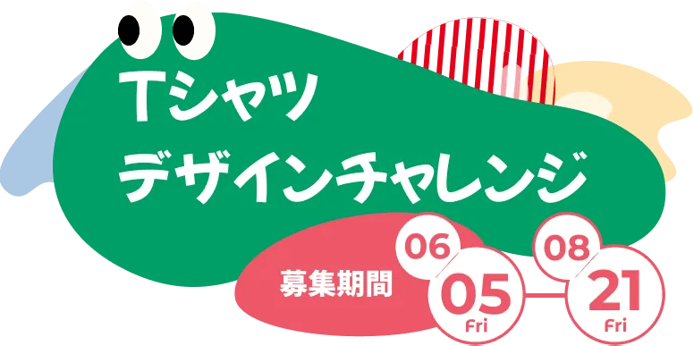

着なくなったTシャツ
サイズアウトしてしまったTシャツが
家に眠っていませんか？
きみだけの
オリジナルTシャツをつくって
ぜひご応募ください
できあがった作品は
福岡市美術館に展示されます
きみもアーティストの仲間入り！
\作り方は自由/
- 絵の具や
ペンで
おえかき - 糸を使って
刺繍や布を
縫う - 折り紙や
レースを
貼る - てがたを
ペタペタ
-
Tシャツを用意しよう!
ご自宅にある不要になったTシャツでOK
-
テーマに沿って自由に描こう
テーマ 未来の福岡
-
作品を送ろう
ポストに投函しよう!
-
8/30 大アート展
自分の作品を見に行こう
応募してくれたTシャツが、展示されるよ!
みんなの作品が、未来の福岡を考える
ヒントになるかも!？
- 展示期間

- 展示場所
-
福岡市美術館 2階
ギャラリースペースA〜F